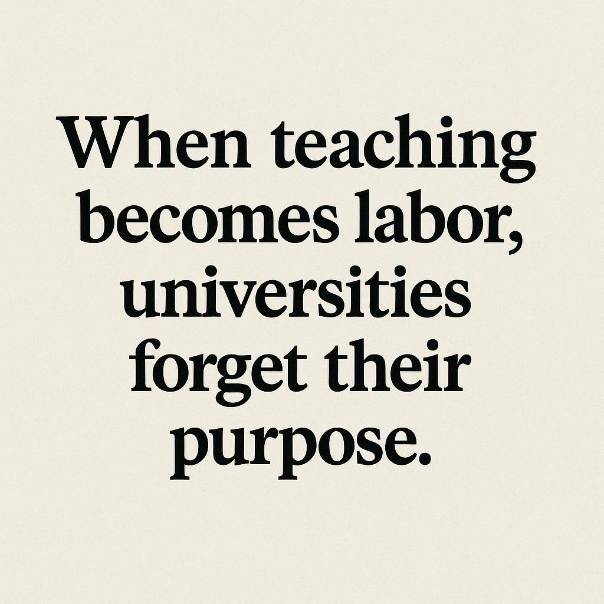

ถ้าอาชีพอาจารย์มหาวิทยาลัยไม่มั่นคงพอ คนรุ่นใหม่ก็ย่อมถามกลับว่า แล้วทำไมเขาต้องเลือกเส้นทางนี้
{kind=link}

บทความนี้โยนคำถามที่สำคัญมากต่อระบบอุดมศึกษาไทยว่า อนาคตใครจะมาเป็นอาจารย์มหาวิทยาลัย เพราะหากดูจากรายได้ ความมั่นคงของงาน เส้นทางความก้าวหน้า และเงื่อนไขเชิงโครงสร้างหลายอย่าง อาชีพนี้กลับไม่ได้มีความน่าดึงดูดอย่างที่สังคมอาจเคยจินตนาการไว้
ผู้เขียนไม่ได้พูดจากอารมณ์ล้วน ๆ แต่ไล่เป็นรายการให้เห็นชัดว่าระบบมหาวิทยาลัยกำลังจัดวางแรงจูงใจอย่างไร ตั้งแต่เงินเดือน การบังคับตำแหน่งวิชาการ การพึ่งพาเงินรายได้ ไปจนถึงการลดลงของอิสระทางวิชาการและความไม่แน่นอนของสาขาที่อาจถูกยุบหรือขาดคนสอน
จุดเด่นของโพสต์นี้คือการรื้อภาพจำว่าอาชีพอาจารย์มหาวิทยาลัยเป็นอาชีพทรงเกียรติและมั่นคงโดยอัตโนมัติ ผู้เขียนชี้ให้เห็นว่าในเชิงโครงสร้าง อาจารย์จำนวนมากอาจได้รับเงินเดือนใกล้กับบุคลากรตำแหน่งอื่น แต่กลับแบกรับความเสี่ยงด้านความก้าวหน้าและความมั่นคงสูงกว่า โดยเฉพาะเมื่อไม่สามารถได้ตำแหน่งวิชาการตามเวลาที่กำหนด
ระบบค่าตอบแทนและความเสี่ยงถูกออกแบบในทางที่ไม่จูงใจคนเก่งระยะยาว
ข้อเปรียบเทียบระหว่างอาจารย์กับสายสนับสนุนในบทความนี้คมมาก เพราะทำให้เห็นว่าระบบไม่ได้ให้รางวัลกับภารกิจหลักของมหาวิทยาลัยอย่างมีนัยสำคัญเท่าที่ควร ในขณะที่อาจารย์คือสายกำลังผลิตหลักของรายได้และชื่อเสียง ระบบกลับทำให้เส้นทางอาชีพนี้มีความเสี่ยงมาก ทั้งเรื่องค่าตอบแทน สวัสดิการ และการไม่มีค่าชดเชยหากหลุดจากเงื่อนไขตำแหน่ง
นั่นทำให้คำถามเรื่องใครจะยังอยากเป็นอาจารย์ ไม่ใช่คำถามประชด แต่เป็นคำถามเรื่อง incentive design ของทั้งระบบ
มหาวิทยาลัยยิ่งพึ่งพาเงินรายได้มากเท่าไร ก็ยิ่งต้องแข่งขันแย่งทั้งนักศึกษาและอาจารย์เก่งมากขึ้น
ผู้เขียนชี้ว่ามหาวิทยาลัยในอนาคตจะต้องพึ่งพาเงินรายได้จากการศึกษา แต่กลับถูกจำกัดไม่ให้เก็บค่าเรียนแพง ขณะเดียวกันก็ถูกคาดหวังว่าต้องให้ของดี สิ่งนี้สร้างแรงกดดันเชิงโครงสร้างทันที เพราะต้นทุนหลักของมหาวิทยาลัยคือเงินเดือน และคนที่สร้างรายได้หลักก็คืออาจารย์
เมื่อเจอสถานการณ์เช่นนี้ มหาวิทยาลัยทั่วไปย่อมมีแนวโน้มได้คนตามเงื่อนไขเฉพาะหน้า เช่น เพราะไม่ขาดแคลนหรือเพราะใกล้บ้าน ส่วนมหาวิทยาลัยที่ปรับตัวได้ดีกว่าจะดูดคนเก่งไป นี่คือการแข่งขันเชิงแรงงานที่ไม่ใช่ทุกแห่งจะรับมือได้
อิสระทางวิชาการที่ลดลงทำให้อาชีพนี้ยิ่งสูญเสียความหมายในเชิงวิชาชีพ
ส่วนที่หนักมากในโพสต์นี้คือการระบุว่าอิสระทางวิชาการแทบไม่มีแล้ว งานวิจัยต้องเดินตามแผนวิจัย ขณะที่การพัฒนานักวิจัยระดับโท-เอกกลับกลายเป็นผลพลอยได้ ไม่ใช่เป้าหมายหลัก มุมนี้ชี้ว่าปัญหาไม่ได้มีแค่เรื่องเงิน แต่รวมถึง ความหมายของการเป็นอาจารย์ ด้วย
เมื่อบทบาทที่เคยเป็นหัวใจของมหาวิทยาลัยค่อย ๆ ถูกลดให้เป็นของแถม อาชีพนี้ก็ไม่เพียงแต่มั่นคงน้อยลง แต่ยังน่าปรารถนาน้อยลงในเชิงจิตวิญญาณวิชาชีพอีกด้วย
คำเตือนสุดท้ายคือ หากระบบไม่เปลี่ยน มหาวิทยาลัยบางแห่งอาจเหลือเพียงที่ดิน ไม่ใช่สถาบันความรู้
ประโยคปิดที่ว่ามหาวิทยาลัยใกล้รถไฟฟ้าอาจกลายเป็นศูนย์การค้าหรือที่จอดรถแทน เป็นการเสียดสีที่แรงแต่เห็นภาพชัด มันไม่ได้หมายถึงอสังหาริมทรัพย์ตรง ๆ เท่านั้น แต่เตือนว่าถ้ามหาวิทยาลัยไม่สามารถรักษาทั้งนักศึกษา อาจารย์ และคุณค่าของการเรียนรู้ไว้ได้ โครงสร้างทางกายภาพก็อาจอยู่ต่อโดยไร้ภารกิจเดิม
ดังนั้น บทความนี้จึงไม่ใช่แค่การบ่นเรื่องอาชีพอาจารย์ แต่เป็นการเตือนล่วงหน้าถึงอนาคตของระบบอุดมศึกษาทั้งระบบ หากยังปล่อยให้แรงจูงใจและโครงสร้างเดินไปในทิศทางเดิม